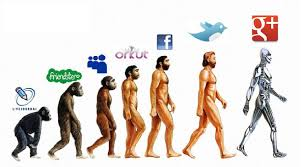

When you are styling a web page with css page you must start to think in terms of boxes.
Each element is treated as if it generates a new box. Each box can have new rules associated with it.
As you can see from the diagram above,each box has a border. Between the content and the border you can have padding, and outside of the border you can have a margin to aeparate this bos from any neighboring boxes.